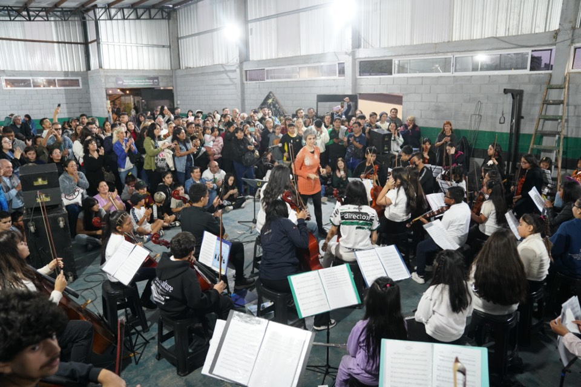
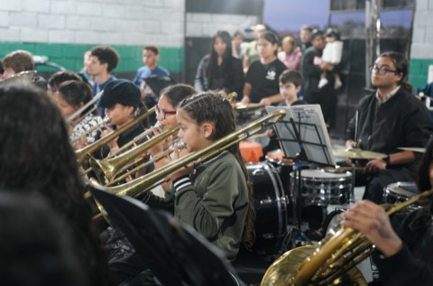

16 de marzo • Escuela Nº 19 Eva Duarte
La temporada 2026 de la Orquesta Infantil y Juvenil de Mataderos comenzará con un concierto muy especial junto a la comunidad del barrio. Ese día acompañaremos un momento significativo para la Escuela Nº 19 del Distrito Escolar 20, que recupera su nombre y pasa a llamarse Escuela Eva Duarte.
El encuentro se realizará en la propia escuela, ubicada en Cosquín 3100, en el barrio de Mataderos, y será una oportunidad para compartir música, celebrar este nuevo comienzo y encontrarnos con vecinos, familias y estudiantes de la comunidad educativa.
Este concierto marcará además el inicio de una serie de presentaciones de la orquesta en distintos espacios del barrio durante el año, acercando la música a la comunidad y fortaleciendo el trabajo conjunto entre alumnos, docentes, familias y vecinos.
La música como forma de comunidad
La Orquesta Infantil y Juvenil de Mataderos vuelve a empezar el año con la misma esencia que la identifica: escuela pública, trabajo en equipo, acompañamiento de las familias y un fuerte vínculo con el barrio.
Este 2026 la propuesta es salir todavía más al encuentro de la comunidad, con conciertos en escuelas, instituciones y espacios barriales para que la orquesta siga siendo parte viva de Mataderos.
Cada presentación será una invitación a escuchar, a participar y a reconocer que detrás de cada chico y cada instrumento hay un entramado de profes, madres, padres, hermanos, cooperadora y vecinos sosteniendo el proyecto.
Una gira que empieza en la escuela y sigue por el barrio
16 de marzo
Concierto en la Escuela Nº 19 Eva Duarte como apertura del año lectivo y de la temporada musical.
Primer semestre
Nuevos conciertos en espacios de Mataderos para acercar la orquesta a más vecinos y reforzar la pertenencia barrial.
Durante todo el año
Ensayos, aprendizajes, encuentros y nuevas presentaciones con protagonismo de alumnos, profes y familias.

Familias, profes, alumnos y barrio
La orquesta es un proyecto que se construye entre muchos. Hay música, sí, pero también hay tiempo compartido, organización, constancia, viajes, instrumentos, esfuerzo y un montón de tareas invisibles que hacen posible cada concierto.
En ese sentido, el sitio también busca invitar a recorrer los conciertos ya cargados del año pasado, para reconocer el camino hecho y preparar el que empieza ahora. La memoria de lo vivido también fortalece el presente.
2026 abre una nueva etapa: más presencia en el barrio, más circulación de la orquesta por la comunidad y más oportunidades para que nuevas familias se acerquen y se sientan parte.
Recorré lo que ya pasó
Entrá a la sección de conciertos para volver a ver presentaciones del año pasado y anticipar las nuevas fechas de esta temporada.
Ir a conciertosCompartí la música
Los registros audiovisuales ayudan a que más personas conozcan la orquesta y acompañen su crecimiento.
Abrir YouTubeSeguí las novedades
Fotos, historias y movimiento cotidiano de la orquesta para sostener el vínculo con la comunidad.
Abrir InstagramQue 2026 nos encuentre haciendo sonar el barrio
La orquesta vuelve a empezar con la fuerza de siempre y con nuevos desafíos por delante. Lo que viene no se sostiene solo con partituras: se sostiene con comunidad.
Nos vemos en los ensayos, en la escuela, en las calles de Mataderos y en cada concierto que ayude a que más personas sientan a la orquesta como propia.